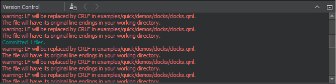
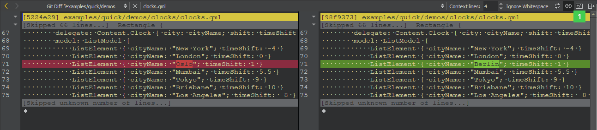

Using Version Control Systems
Version control systems supported by Qt Creator are:
| Version Control System | Address | Notes |
|---|---|---|
| Bazaar | http://bazaar.canonical.com/ | |
| ClearCase | http://www-01.ibm.com/software/awdtools/clearcase/ | Disabled by default. To enable the plugin, select Help > About Plugins > Version Control > ClearCase, and then restart Qt Creator. |
| CVS | http://www.nongnu.org/cvs/ | |
| Git | http://git-scm.com/ | Git version 1.9.0, or later Gerrit version 2.6, or later |
| Mercurial | http://mercurial.selenic.com/ | |
| Perforce | http://www.perforce.com | Server version 2006.1 and later Disabled by default. To enable the plugin, select Help > About Plugins > Version Control > Perforce, and then restart Qt Creator. |
| Subversion | http://subversion.apache.org/ | Subversion version 1.7.0 and later |
Setting Up Version Control Systems
Qt Creator uses the version control system's command line clients to access your repositories. To allow access, make sure that the command line clients can be located using the PATH environment variable. Alternatively, specify the path to the command line client executable in the Command field in the version control system specific tab in Tools > Options > Version Control.
If authentication is required to access the repository, enter the user credentials in the Username and Password fields.
Enter a timeout for version control operations in the Timeout field.
For some version control systems, you can specify the maximum number of lines the log can contain in the Log count field.
After you set up the version control system, use the command line to check that everything works (for example, use the status command). If no issues arise, you should be ready to use the system also from Qt Creator.
For more information on using Git for Windows, see Using Git for Windows.
Setting Up General Options
Select Tools > Options > Version Control > General to specify settings for submit messages:
- Wrap submit messages at limits the line length of a submit message to the specified number of characters.
- Submit message check script is a script or program that can be used to perform checks on the submit message before submitting. The submit message is passed in as the script's first parameter. If there is an error, the script should output a message on standard error and return a non-zero exit code.
- User/alias configuration file is a text file that lists author names in mailmap format. For each author, you must specify a real name and email address and optionally an alias and a second email address. For example:
Jon Doe <Jon.Doe@company.com> jdoe <jdoe@somemail.com> Hans Mustermann <Hans.Mustermann@company.com> hm <info@company.com>
After you specify a file in this field, you can select authors as values of the submit message fields in the Nicknames dialog.
- User fields configuration file is a simple text file consisting of lines specifying submit message fields that take authors as values, for example:
Acked-by: Initial-patch-by: Reported-by: Rubber-stamped-by: Signed-off-by: Tested-by:
After you specify a file in this field, you can add authors as values of the submit message fields when submitting changes. If you also specified a User/alias configuration file, you can select authors in the Nicknames dialog.
- SSH prompt command specifies an ssh-askpass command that you can use (on Linux) to prompt the user for a password when using SSH. For example,
ssh-askpassorx11-ssh-askpass, depending on the ssh-askpass implementation that you use. - Reset VCS Cache resets the version control system configuration to a state known to Qt Creator after it has been changed from the command line, for example.
Creating VCS Repositories for New Projects
Qt Creator allows you to create repositories for version control systems that support local repository creation, such as Git, Mercurial, or Bazaar. When creating a new project by selecting File > New File or Project, you can choose a version control system on the final wizard page.
You can also select Tools and then select Create Repository in the submenu for the version control system.
To import a project that is under version control, choose File > New File or Project > Project from Version Control and select the version control system that you use. Follow the instructions of the wizard to import the project.
Using Common Functions
The Tools menu contains a submenu for each supported version control system. This section describes using the functions that are available for all the supported version control systems. For more information about the additional functions and options available for a particular version control system, see:
The Version Control output pane displays the commands that are executed, a timestamp, and the relevant output. Select Window > Output Panes > Version Control to open the pane.

Adding Files
When you create a new file or a new project, the wizard displays a page asking whether the files should be added to a version control system. This happens when the parent directory or the project is already under version control and the system supports the concept of adding files, for example, Perforce and Subversion. Alternatively, you can add files later by using the version control tool menus.
Viewing Diff Output
All version control systems provide menu options to diff the current file or project: to compare it with the latest version stored in the repository and to display the differences. In Qt Creator, a diff is displayed in a read-only editor. If the file is accessible, you can double-click on a selected diff chunk and Qt Creator opens an editor displaying the file, scrolled to the line in question.

With Git, Mercurial, and Subversion, the diff is displayed side-by-side in a diff editor by default. To use the inline diff view instead, select the Switch to Text Diff Editor (1) option from the toolbar. In the inline diff view, you can use context menu commands to apply, revert, stage, and unstage hunks, as well as send them to a code pasting service.
Viewing Versioning History and Change Details
Display the versioning history of a file by selecting Log or Filelog. Typically, the log output contains the date, the commit message, and a change or revision identifier.
Annotating Files
Annotation views are obtained by selecting Annotate or Blame. Selecting Annotate or Blame displays the lines of the file prepended by the change identifier they originate from. Clicking on the change identifier shows a detailed description of the change.
To show the annotation of a previous version, right-click on the version identifier at the beginning of a line and choose one of the revisions shown at the bottom of the context menu. This allows you to navigate through the history of the file and obtain previous versions of it. It also works for Git and Mercurial using SHA-1.
The same context menu is available when right-clicking on a version identifier in the file log view of a single file.
Committing Changes
Once you have finished making changes, submit them to the version control system by choosing Commit or Submit. Qt Creator displays a commit page containing a text editor where you can enter your commit message and a checkable list of modified files to be included.
Reverting Changes
All supported version control systems support reverting your project to known states. This functionality is generally called reverting.
The changes discarded depend on the version control system.
A version control system can replace the Revert menu option with other options.
Viewing Status
You can select Status to view the status of the project or repository.
Updating the Working Tree
You can select Update to update your working tree with the latest changes from the branch. Some version control systems allow you to choose between updating the current project and updating all projects.
Deleting Files
You can select Delete to delete obsolete files from the repository.